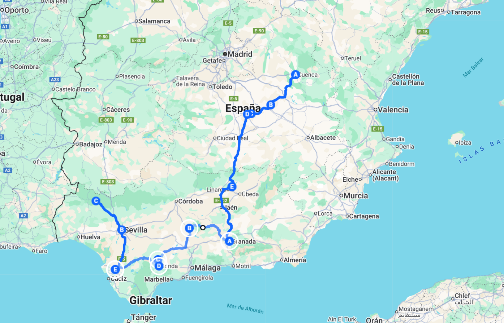

LA RUTA ESPAÑOLA
Recorrer en moto la ruta que une Cuenca con Aracena es emprender un viaje donde cada kilómetro encierra una historia, un paisaje y una emoción distinta. Desde la partida en la majestuosa Cuenca, con sus casas colgadas y su aire de altura, comienza una travesía que poco a poco desciende hacia el corazón de la Mancha, donde el horizonte se abre y el viento parece acompañar el rugido de los motores. La sensación de libertad se mezcla con la expectación de lo que está por venir: carreteras que parecen hechas para disfrutar, pueblos blancos que asoman en la distancia y esa magia que solo se descubre cuando el viaje se comparte entre amigos sobre dos ruedas.
Los primeros tramos atraviesan Campos de Criptana y Alcázar de San Juan, tierra de molinos y llanuras infinitas donde el asfalto se confunde con el cielo. Aquí, la moto se convierte en un compañero fiel que traza líneas entre los caminos del Quijote, mientras el sol tiñe de dorado los campos y el olor a trigo acompaña cada curva. No hay prisa: solo el placer de rodar, de sentir cómo el paisaje se transforma lentamente y la Mancha va dando paso a las sierras andaluzas. Las paradas se llenan de risas, fotografías y anécdotas que pronto formarán parte del recuerdo colectivo del grupo.
Llegar a Granada es como entrar en un sueño. La Alhambra vigila desde lo alto mientras las calles se llenan de historia y vida, y la carretera que lleva hacia Lucena, Setenil de las Bodegas y Ronda se convierte en una sinfonía de curvas, aromas y colores. Son tramos donde la moto baila al compás del terreno, donde cada mirador ofrece una postal imposible de olvidar. En Setenil, las casas excavadas en la roca sorprenden al visitante; en Ronda, el Tajo corta la tierra como una cicatriz majestuosa. Es imposible no detenerse, quitarse el casco y respirar hondo, agradeciendo el privilegio de estar allí, viviendo el viaje plenamente.
El tramo final hacia Jerez de la Frontera, Sevilla y Aracena es un canto a la alegría del sur. El olor a vino y azahar, el ritmo de las ciudades y la calma de las sierras acompañan los últimos días de ruta. En Jerez, los motores rugen con un sonido especial; en Sevilla, las noches invitan a celebrar; y en Aracena, el silencio del bosque pone el broche de oro al viaje. Al caer el sol, entre tapas, risas y anécdotas, todos saben que han compartido algo único: una aventura que no se olvida, una ruta que se siente en la piel, y el deseo inevitable de repetirla, porque rodar juntos no es solo viajar… es vivir intensamente.
✔️ TU VIAJE INCLUYE …
- Pack de Bienvenida
- Desayunos en Hotel y Cenas en Ruta
- 5 días y 4 noches en Hoteles
- Aparcamiento para tu vehículo
- Video reportaje del viaje
- Seguro de Protección Civil
- 2 Personas coordinan el grupo
- En las comidas y cenas solo se incluye ” Agua “
❌ TU VIAJE NO INCLUYE …
- Motocicleta para el viaje
- Cualquier concepto no especificado en el apartado ” Tu Viaje incluye …”
- Gasolina y peajes de Autopistas o Autovías
- No se cubren gastos derivados de conductas negligentes o irresponsables
- El seguro de protección civil incluido solo cubre a terceros y no reemplaza el seguro personal obligatorio
- Bebidas en ruta y por supuesto bebidas alcohólicas ni bebidas en minibar de hoteles
- Entradas a Monumentos
- Las propinas son voluntarias y a discreción del cliente
🗒️ A TENER EN CUENTA …
- Todas las habitaciones son compartidas. Si viajas solo o no cuentas con un acompañante, la organización te asignará un compañero de cuarto para que disfrutes de una experiencia cómoda, segura y social.
- Cada uno se hará responsable de su propio equipaje
- Portar Herramientas necesarias para el mantenimiento de tu moto y un Kit de reparapinchazos
- Llevar los medicamentos personales y cualquier material médico necesario
- Pasaporte y visado en regla
- Permiso de circulación y tarjeta ITV, Carnet de Conducir

DÍA 1
Reunión en el Hotel, (Cuenca)
El viaje comienza en el Hotel, punto de encuentro donde las motos y sus pilotos se dan cita con la ilusión de compartir ruta y kilómetros.
DÍA 2
Hacia Tierras del Sur (501 Km)
La carretera nos guía desde Cuenca, donde las casas colgadas parecen flotar sobre el vacío, hacia las vastas llanuras manchegas, territorio eterno de Don Quijote. El paisaje se abre inmenso, y el horizonte se funde con el cielo en un juego de luces que invita a soñar. En Campos de Criptana, los molinos se alzan como gigantes vigilantes, testigos de historias que el viento aún susurra entre las aspas. La moto avanza ligera por carreteras secundarias que atraviesan trigales dorados y pueblos blancos, hasta alcanzar Alcázar de San Juan, donde el espíritu quijotesco sigue vivo en cada rincón. La ruta continúa hacia Granada, dejando atrás la serenidad de la Mancha para adentrarse en tierras donde la montaña impone su fuerza y la historia se siente en cada curva. Es un viaje que une la imaginación, la belleza y el placer puro de rodar.
DÍA 3
Dirección Jerez de la Frontera (341 Km)
Desde Granada, la carretera se abre paso entre montañas majestuosas, donde cada curva parece tallada para el placer de conducir. El asfalto se desliza entre pinares, barrancos y miradores que regalan vistas infinitas de Sierra Nevada. Al descender hacia Lucena, el paisaje se vuelve más cálido, con olivares que se extienden como un manto verde hasta perderse en el horizonte. La moto responde con suavidad a cada giro, y el viento trae aromas de tierra y libertad. En Setenil de las Bodegas, las casas incrustadas en la roca sorprenden como un secreto escondido entre las montañas, antes de continuar hacia Ronda, donde el famoso Tajo corta el valle en dos con una belleza sobrecogedora. El tramo final hacia Jerez combina curvas fluidas y rectas rápidas entre viñedos y colinas suaves, un cierre perfecto para una jornada intensa de pura carretera y paisajes inolvidables.
DÍA 4
Jerez de la Frontera – Sevilla – Aracena (90 Km)
Desde Jerez de la Frontera, la carretera nos lleva entre suaves colinas cubiertas de viñedos y campos dorados que anuncian el sur más auténtico. El trazado serpentea con elegancia hacia Sevilla, donde el calor y la luz envuelven cada kilómetro, y el ambiente andaluz se siente en el aire. Al dejar atrás la ciudad, la ruta se adentra en la sierra rumbo a Aracena, con carreteras de montaña que se estrechan entre encinas y alcornoques. El paisaje cambia a cada curva, revelando dehesas donde pastan los cerdos ibéricos y pueblos blancos que emergen entre el verde. La llegada a Aracena culmina con el placer de recorrer caminos que huelen a jamón y tierra húmeda, un final perfecto para una jornada que combina curvas, naturaleza y la esencia más pura de Andalucía.
DÍA 5
Aracena y sus encantos
El día en Aracena comienza con el aroma fresco de la sierra y el sonido de las campanas que marcan el ritmo tranquilo del pueblo. Tras el desayuno, la ruta se adentra por caminos que bordean encinares centenarios hasta llegar a una ganadería de cerdo ibérico, donde el paisaje se funde con el olor a tierra y a naturaleza viva. Allí, los visitantes descubren el arte del cuidado del animal, el respeto por el entorno y la paciencia que requiere criar el mejor jamón del mundo. La jornada continúa con una degustación de jamones y embutidos acompañada de vino local, un festín de sabores que resume la esencia de estas tierras. Pasear por las calles empedradas de Aracena al atardecer, con la silueta del castillo al fondo, cierra un día perfecto en el corazón de la dehesa andaluza.